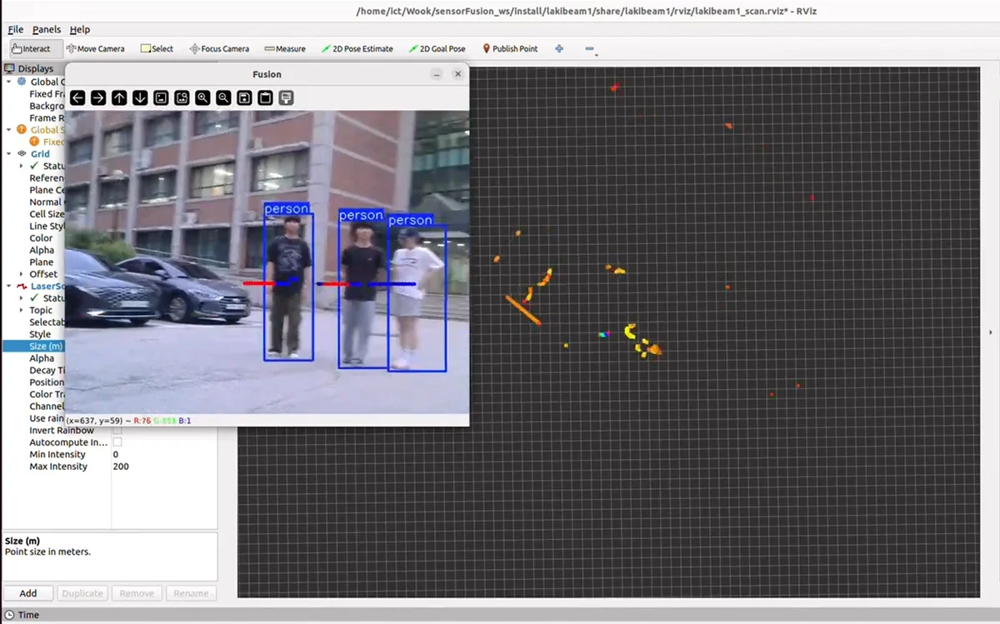

← 전체 프로젝트
실제 로봇 / 센서와 구동 장치 통합 Camera + LiDAR / 당시 실험 화면
02 / ROBOT SYSTEM INTEGRATION
GoSung
구현 완료센서 MCU와 구동 MCU를 ROS 2에 연결한 실외 배달 로봇

PROJECT OVERVIEW
프로젝트 개요
교내 실외 환경에서 배달 로봇의 주행을 시도한 프로젝트입니다. 센서 수집, 로봇 구동, ROS 2와 모바일 앱을 연결했습니다.
MY ROLESTM32 펌웨어 및 ROS 2 센서, 제어 연동
IMPLEMENTATION
- 센서, 구동 MCU 분리 및 IMU/GPS UART 수신, 파싱
- ROS 2 Serial Node에서 /imu, /fix, /odom 데이터 변환
- Hall Sensor 속도 추정과 오차에 따른 PWM 증감 보정
- SRF08 초음파 정지 로직, 경사로 정차 보정 및 Camera–LiDAR 연계
SYSTEM FLOW
시스템 구성
- 01IMU / GPS
- 02센서 STM32
- 03ROS 2
- 04구동 STM32 / 모터
TEAM & COMPONENTS
Nav2, YOLOv5 ROS 2 wrapper와 Lakibeam ROS 2 Driver를 적용했습니다. 저는 센서 MCU와 구동 MCU를 ROS 2에 연결하고 실제 로봇에서 통합했습니다.
구현 코드 확인PROBLEM SOLVING
문제 해결
문제와 접근
정지 명령을 내려도 경사로에서 로봇이 미끄러졌습니다. 정지 시점 이후 Hall Sensor 변화를 확인하고, 미끄러지는 방향의 반대로 PWM을 보정하는 로직을 구현했습니다.
결과와 개선점
당시 실험에서 경사로 정차 동작을 확인했습니다. MCU부터 ROS 2, 앱까지 실제 장치의 데이터 흐름을 연결했습니다.
급가속과 평지 외력을 경사로로 판단하는 경우가 있었습니다. 이후 별도 SensorFusion 실험에서 Camera와 LiDAR의 시간 동기화를 보완했습니다.